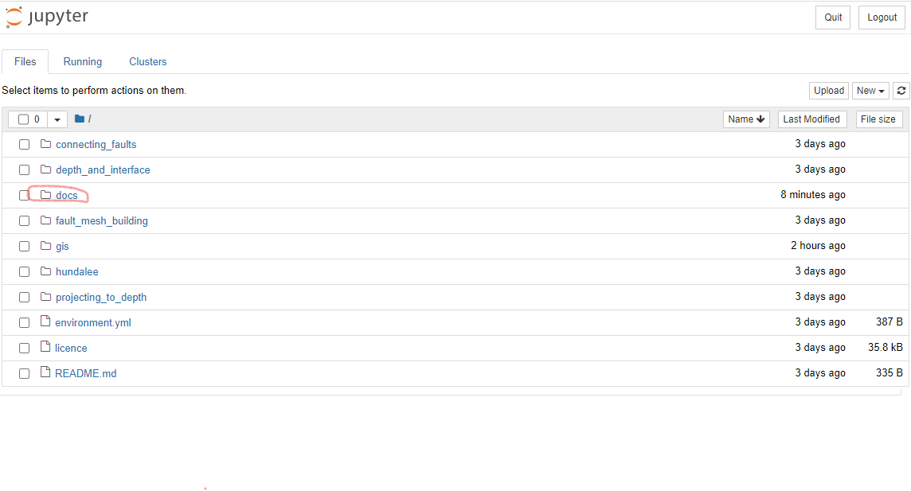
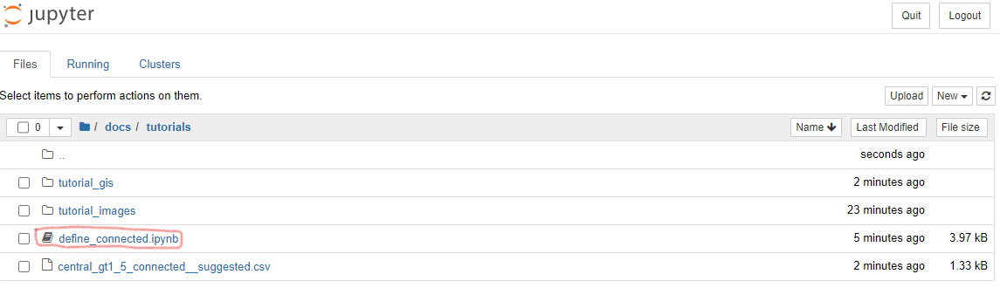

Running tutorial examples using Jupyter
Open Jupyter notebooks
Open Anaconda or Miniforge Prompt
Run
cd {PATH_TO_REPO}and hitEnter, where{PATH_TO_REPO}is the location where you have downloaded the code to, for exampleC:\Users\{USER}\Documents\projects\cfm_leapfrog. In this case,{USER}is your username. Note that if you have downloaded to a drive that is different from yourC:drive, you will need to change drives first; for example, typeD:followedEnter.Type
jupyter notebookand hitEnter.
These actions should open a new tab in your web browser that looks something like this.

4. Click through docs followed by tutorials to enter the directory where the example notebooks are stored.
5. Click on a tutorial to open it in a new tab:
